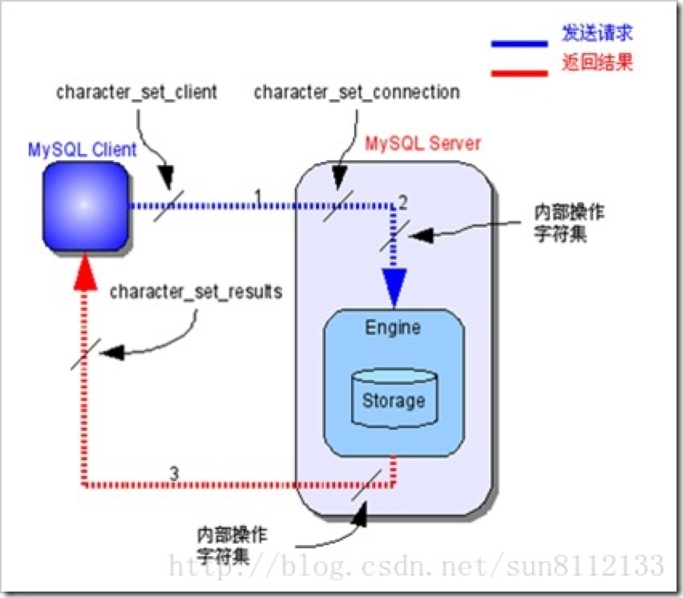

本篇会简单介绍在 MySQL 中关于 8个 character_set 变量的基本作用。
使用下列SQL语句可以查看 MySQL中8个 character_set 变量
1 | SHOW VARIABLES LIKE'%char%'; |
8个 character_set 变量：
一、character_set_client
二、character_set_connection
三、character_set_database
四、character_set_filesystem
五、character_set_results
六、character_set_server
七、character_set_system
八、character_sets_dir
一、character_set_client
主要用来设置客户端使用的字符集。
二、character_set_connection
主要用来设置连接数据库时的字符集，如果程序中没有指明连接数据库使用的字符集类型则按照这个字符集设置。
三、character_set_database
主要用来设置默认创建数据库的编码格式，如果在创建数据库时没有设置编码格式，就按照这个格式设置。
四、character_set_filesystem
文件系统的编码格式，把操作系统上的文件名转化成此字符集，即把 character_set_client转换character_set_filesystem， 默认binary是不做任何转换的。
五、character_set_results
数据库给客户端返回时使用的编码格式，如果没有指明，使用服务器默认的编码格式。
六、character_set_server
服务器安装时指定的默认编码格式，这个变量建议由系统自己管理，不要人为定义。
七、character_set_system
数据库系统使用的编码格式，这个值一直是utf8，不需要设置，它是为存储系统元数据的编码格式。
八、character_sets_dir
这个变量是字符集安装的目录。
在启动mysql后，我们只关注下列变量是否符合我们的要求
- character_set_client
- character_set_connection
- character_set_database
- character_set_results
- character_set_server
下列三个系统变量我们不需要关心，不会影响乱码等问题
- character_set_filesystem
- character_set_system
- character_sets_dir
更改以上字符集直接 set character_set_XXX = “gbk”;（XXX是写以上的变量名）
借助网上的一个完整的用户请求的字符集转换流程来更好的理解上述几个变量：
- mysql Server收到请求时将请求数据从 character_set_client 转换为 character_set_connection
- 进行内部操作前将请求数据从 character_set_connection 转换为内部操作字符集,步骤如下
A. 使用每个数据字段的 CHARACTER SET 设定值；
B. 若上述值不存在，则使用对应数据表的字符集设定值
C. 若上述值不存在，则使用对应数据库的字符集设定值；
D. 若上述值不存在，则使用 character_set_server 设定值。
- 最后将操作结果从内部操作字符集转换为 character_set_results


...
...
This is copyright.